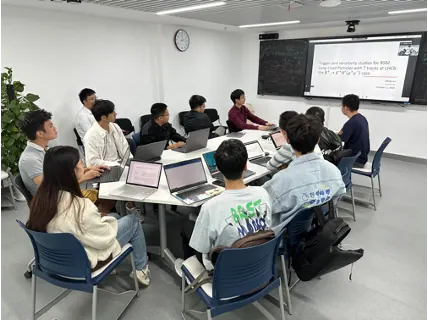
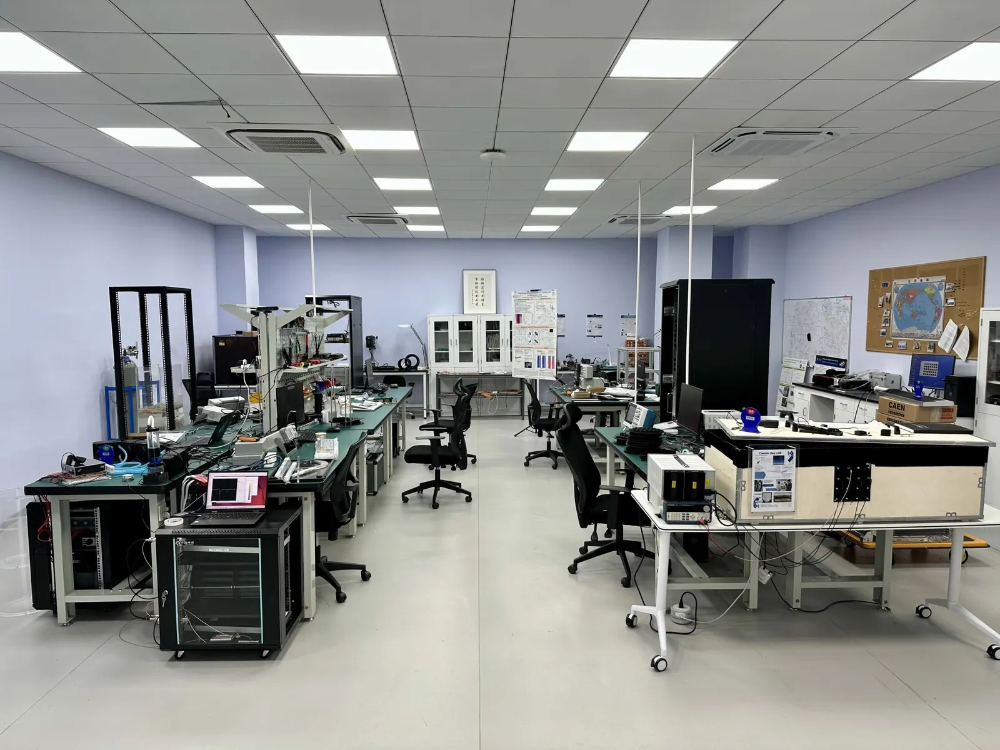

EDUTeaching教学
Teaching教学
Courses, journal clubs, study groups, schools and the international summer research internship.课程、文献阅读会、教材研读、暑期/冬季学校与国际暑期科研实习。
Journal clubs and study group


- Spring 2024, TDLI Muon Journal Club (every Wednesday 2:00 pm at TDLI/Minhang campus, https://indico-tdli.sjtu.edu.cn/category/24/, password protected)
- Fall 2023, TDLI Muon Journal Club (every Wednesday 2:00 pm at TDLI/Minhang campus, https://indico-tdli.sjtu.edu.cn/category/24/, password protected)
- Spring 2023, TDLI Muon Journal Club (every Wednesday 1:00 pm at TDLI/Minhang campus, https://indico-tdli.sjtu.edu.cn/category/24/, password protected)
- Fall 2022, TDLI Muon Journal Club (every Wednesday 1:00 pm at TDLI/Minhang campus, https://indico-tdli.sjtu.edu.cn/category/24/, password protected)
- Spring 2022, TDLI Muon Study Group (every Friday 11 am at TDLI/Minhang campus, Particles, Fields, Quanta: From Quantum Mechanics to the Standard Model of Particle Physics by Gerhard Ecker)
- Spring 2022, TDLI Muon Journal Club (every Wednesday 1:30 pm at TDLI/Minhang campus, https://indico-tdli.sjtu.edu.cn/category/24/, password protected)
- Fall 2021, TDLI Muon Study Group (every Friday 6 pm at TDLI/Minhang campus, https://indico-tdli.sjtu.edu.cn/category/24/, password protected)
- Fall 2020 – Spring 2021, TDLI Tea Time (every Friday 4 pm at TDLI 3rd floor, see photo gallery)
- Spring 2020, Journal club for Collider Physics Group (https://indico-tdli.sjtu.edu.cn/event/171/, password protected)
Graduate courses
- Work in progress for a course on “Physics with Muons: From microscopic to macroscopic world” (Fall 2024?)
- Spring 2024, PHY6009: Scientific Writing, Integrity, and Ethics (for 2nd-year graduate students and above)
Undergraduate courses
- Spring 2024, PHY1950: Introduction to Physics Research (for 1st year undergraduate students at Zhiyuan College, SJTU)
- Spring 2023, PHY1950: Introduction to Physics Research (for 1st year undergraduate students at Zhiyuan College, SJTU)
- Fall 2022, PHY2900: Introduction to Physics Research (for 2nd year undergraduate students at SPA)
- Spring 2022, PHY1950: Introduction to Physics Research (for 1st year undergraduate students at Zhiyuan College, SJTU)
- Fall 2021, PHY2900: Introduction to Physics Research (for 2nd year undergraduate students at SPA)
- Major Research Areas in Physics (what are the exciting projects out there?), Research Methodology (how to do research?), Literature Review (how to read a paper?), Scientific Writing and Publish (how to publish a paper?), and Scientific Presentation (how to present your results?)
- Fall 2020, PH0028: University Physics II (for engineering students)
- Electricity & Magnetism, Optics, and Modern Physics
- Spring 2020, PH102: 热学 (Thermal Physics) (TA of Prof. Hang Zheng)
- 热力学 (Thermodynamics) and 统计力学 (Statistical Physics)
Online courses
- From Track to Truth: Geant4 muon simulation in 12 weeks — a standalone, bilingual (English/中文) online course: twelve weekly labs taking students from a 50-line Python Monte Carlo to a virtual experiment they can defend, with lecture notes, 3D event animations, interactive models, runnable Geant4 code and self-check quizzes.
Summer/Winter Schools
- Summer 2024: Muon: who ordered that?, SJTU Physics International Summer School 2024, Tsung-Dao Lee Institute
- Summer 2023: Precision Muon Physics, Joint TDLI & INPAC Summer School in Particle Physics 2023, Shanghai Jiao Tong University
- Summer 2023: SUT-PSI School of Muon and Neutron Physics, Suranaree University of Technology, Nakhon Ratchasima, Thailand
- Winter 2022: Muon g-2 experiment and statistical data analysis, The 4th KMI School: Statistical Data Analysis and Anomalies in Particle Physics and Astrophysics, Nagoya University
- Summer 2022: Precision Muon Physics, Joint TDLI & INPAC Summer School in Particle Physics 2022, Shanghai Jiao Tong University
- Summer 2021: Precision Muon Physics, Joint TDLI & INPAC Summer School in Particle Physics 2021, Shanghai Jiao Tong University
International Summer Research Internship


We offer summer research internship opportunities for international and Chinese students. You will learn about the following items over 1 to 2 months in our lab.
- Introduction to Particle Physics and Muon Physics
- Introduction to Particle and Radiation Detection and DAQ system
- Introduction to Simulation and Data Analysis Tools in Experimental Particle Physics
- Measurements of the muon properties in a tabletop setup